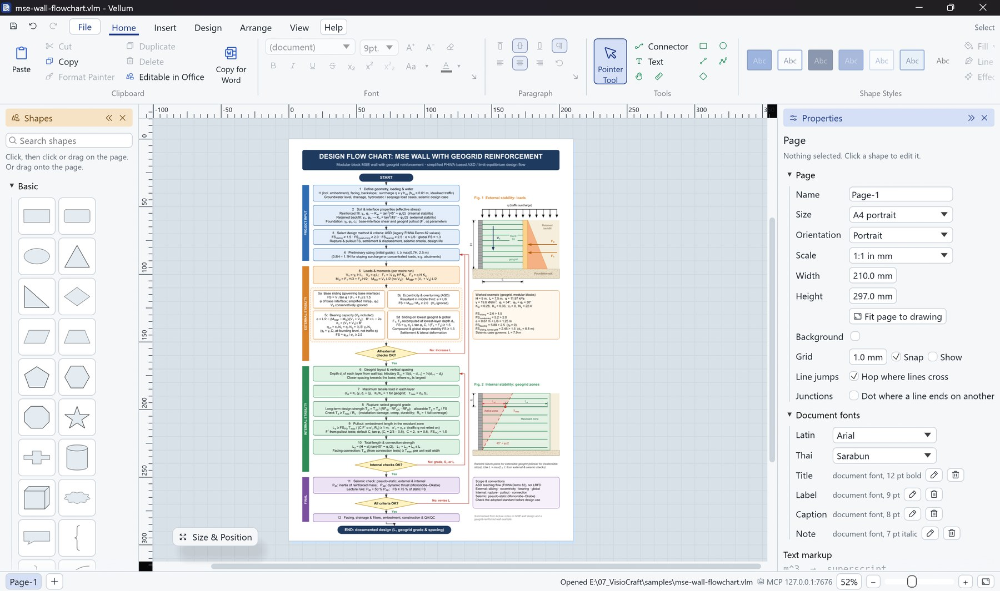
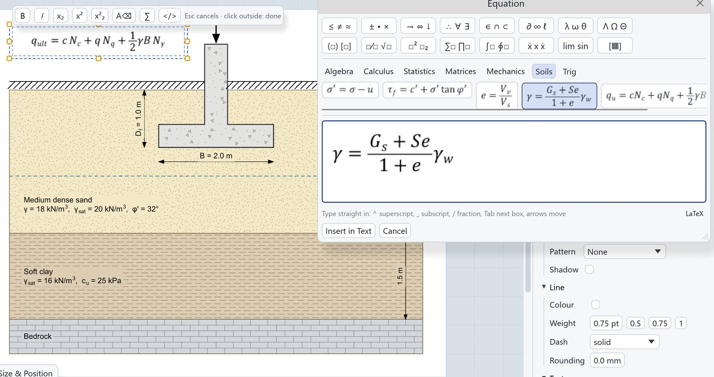
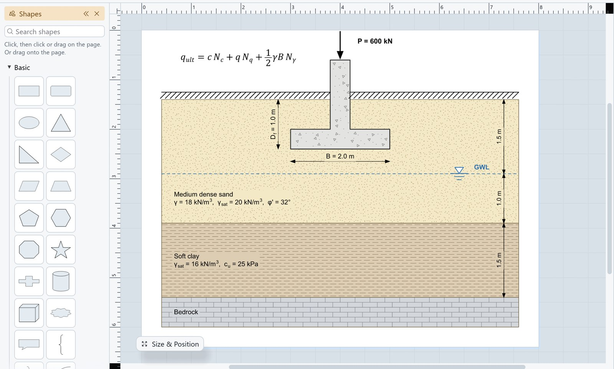
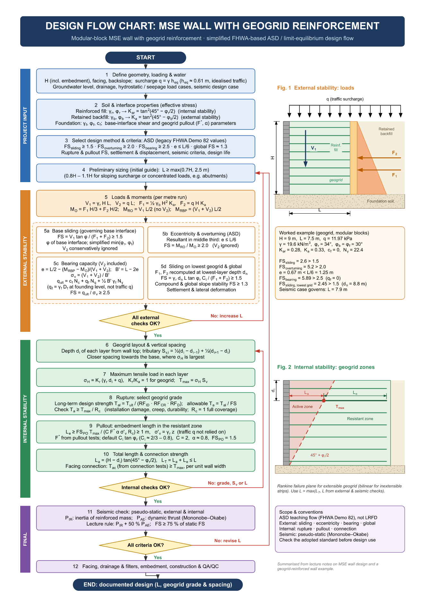
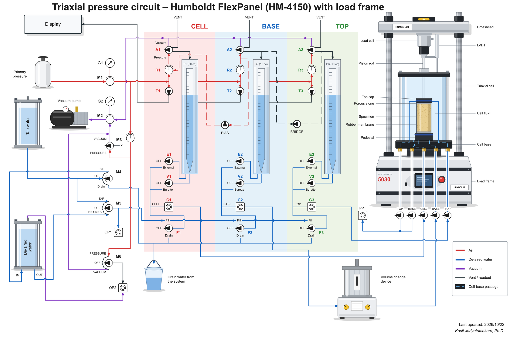
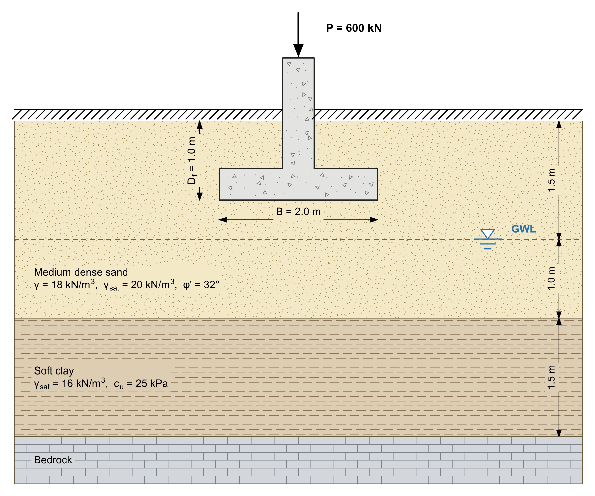
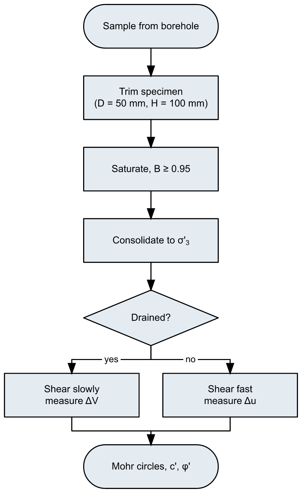

Diagram editor · Windows · macOS beta · v0.2.4
Figures for the paper, drawn by you or your agent.
Vellum draws the figures a research lab makes every day: flow charts, soil profiles, footings, test set-ups and process circuits. Paste them into Word as sharp vector pictures at their true size, or let an AI assistant build them through the Model Context Protocol while you watch.

The parts you use every day, done properly.
Shapes, glued connectors and text with subscripts, plus the symbols an engineering lab needs, in one small program that starts instantly.
Equation editor
Equations set as Office sets them.
Insert > Equation (Alt+=) opens an editor with symbol and template palettes, ready-made formulas by subject (algebra, calculus, statistics, mechanics, soils), the LaTeX source and a live preview. Equations sit inside a label or a sentence in Cambria Math. With Editable in Office on they paste into Word and PowerPoint as Office equations, and equations copied from Word paste back as Vellum equations.

Engineering drawings at scale
Set the page to 1:50 in metres and draw in metres.
Rulers, dimensions and Size & Position read in the drawing scale. Soil layers (sand, clay, silt, gravel, rock, peat, concrete, made ground), water table, ground surface, footings, piles, loads, supports and anchors come from the engineering stencil, and every hatch is real geometry, so it survives EMF, PDF and .vsdx.

Paste into Word, still vector
Ctrl+C puts a vector EMF on the clipboard at the drawing's true size, so the figure stays sharp in the thesis and the journal proof.
Connectors that stay glued
Right-angle, straight or curved connectors follow their shapes, hop over earlier lines where they cross, and carry labels and ten arrowhead styles.
Process and P&ID symbols
Valves, instruments, pumps, vessels and heat exchangers to ISO 10628 / ISA-5.1, each gluing at its own pipe ends and nozzles.
.vsdx in and out
Open .vsdx diagrams with masters, groups, layers, glue and the pictures in them, and save .vsdx with connectors still attached for colleagues who use other diagram editors.
Figures from other programs
Paste a chart from Origin, Excel or PowerPoint; an EMF stays vector, and Convert to shapes turns it into editable lines and text.
Text styles and Thai
Label markup such as m^3 and k_{sat}, named text styles that labels follow, and Thai set
in its own font (Sarabun by default).
Model Context Protocol
Describe the figure. The agent draws it.
vellum-mcp exposes every command as a tool, so an assistant such as Claude can do anything the menus can. It renders the page to check its own work, and you watch it happen in the Vellum window.
- Register the server once. One line in Claude Code, or a few lines of JSON in Claude Desktop.
- Ask in plain words. Paste your notes, slides or a sketch and say what the figure should show.
- Edit by hand or by asking. The drawing is ordinary Vellum shapes: move them, restyle them, or ask for changes.
# Claude Code on Windows claude mcp add vellum -- "%LOCALAPPDATA%\Programs\Vellum\vellum-mcp.exe" # on a Mac claude mcp add vellum -- /Applications/Vellum.app/Contents/MacOS/vellum-mcp
“Draw a strip footing on 2 m of sand over soft clay with the water table at 1.5 m, at 1:50, and copy it for Word.”

Made in Vellum.
Every figure on this page was drawn in Vellum and exported straight from it.



From the drawing to the document.
Three ways to get a figure out, all keeping it vector. On the Mac, use ⌘ for Ctrl; copying puts a vector PDF on the pasteboard.
Ctrl + C
Copy the selection or the whole drawing as a vector EMF and paste it into Word or PowerPoint at its true size.
Editable in Office
Turn it on to paste editable Office shapes and equations instead, with sub- and superscripts, Thai and hatches.
Ctrl + E
Export EMF, PDF with fonts embedded, SVG in millimetres, PNG at 300 to 1200 dpi, or .vsdx.
Download
Get Vellum.
On Windows, run the installer and Vellum is in your Start menu; on a Mac, move Vellum.app to Applications. No administrator rights, nothing to sign up for. Free for personal, academic and commercial work under the freeware licence; the drawings you make are yours.
Vellum checks this site once a day and offers new versions itself: one click downloads and installs them. Turn it off under Help if you prefer.
Windows may show a SmartScreen warning the first time because the program is not code-signed: choose More info, then Run anyway.
The Mac app is not notarized yet: the first time, right-click Vellum.app and choose Open, or allow it under System Settings > Privacy & Security.
Windows
Download Vellum-Setup.exe- The editor and
vellum-mcp.exe, the MCP server for AI assistants - Start menu entry; .vlm drawings open with a double-click
LICENSE.txtand third-party notices- Uninstall from Settings > Apps
Prefer no installer? Portable .zip: unzip and run (no automatic updates).
macOS beta
Download vellum-macos.zip- One
Vellum.appfor both kinds of Mac, withvellum-mcpinside - .vlm drawings open with a double-click; updates install themselves
- Not yet on the Mac: metafile (EMF/WMF) pictures inside .vsdx files, and pasting shapes copied in Word or PowerPoint